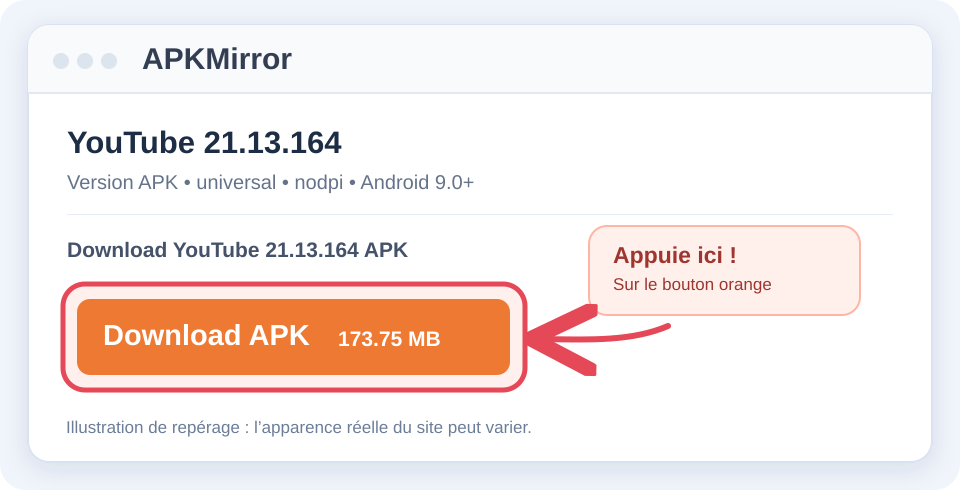

3 téléchargements, et c’est parti !
Morphe Manager 2.6.0
MicroG-RE 7.3.1
Assistant de téléchargement 5.4.0
Si le téléchargement automatique ne fonctionne pas : méthode APKMirror
Morphe a toujours besoin du fichier YouTube original. Si l’assistant n’arrive pas à le récupérer, utilise ce lien vers la version 21.13.164 en APK universal / nodpi.
Ouvrir le bon YouTube sur APKMirror
Les 7 étapes faciles
Coche une étape quand tu l’as terminée. Ta progression reste enregistrée sur ce téléphone.
1. Installe Morphe Manager
Depuis le bouton 1 ci-dessus. Ouvre le fichier téléchargé, puis touche « Installer ». Si Android demande l’autorisation, accepte uniquement pour cette installation.
2. Installe MicroG
Depuis le bouton 2. Il servira à te connecter à YouTube RVX plus tard.
3. Installe l’assistant
Depuis le bouton 3. Il se chargera de chercher le fichier YouTube à ta place, si une source compatible est disponible.
4. Ajoute les patches RVX
Ouvre une première fois Morphe, puis reviens ici et touche le bouton. Morphe doit te proposer d’ajouter la source Anddea. Accepte.
5. Active l’assistant dans Morphe
Ouvre Morphe → Paramètres → Fichiers → APK download helper. Active l’interrupteur à côté de l’assistant installé, puis confirme avec Trust / Faire confiance. Le bouton d’assistance n’apparaît pendant le téléchargement que si cette autorisation est activée.
6. Récupère YouTube et laisse Morphe le modifier
Dans Morphe, touche YouTube → si demandé, choisis Anddea → « Oui, aide-moi à trouver un APK » → « Utiliser une application d’assistance / Use a helper app ». Dans l’assistant, demande la version exacte proposée par Morphe (actuellement 21.13.164 pour Anddea 4.3.0), au format APK, puis lance le téléchargement. S’il réussit, l’assistant transmet le fichier à Morphe : la modification démarre automatiquement. À la fin, appuie sur Installer / Install.
7. Ouvre YouTube RVX 🎉
La nouvelle application est distincte de YouTube officiel. Ouvre-la et connecte-toi à ton compte Google avec MicroG si tu le souhaites.
Un souci ?
« L'application n'a pas été installée »
Si une ancienne version de RVX est déjà installée et utilise une signature différente, exporte ses réglages si possible puis désinstalle uniquement l'ancien RVX et réessaie. Ne supprime pas ton YouTube officiel.
Android bloque l'installation du fichier
Dans l'avertissement Android, autorise temporairement l'installation par l'application utilisée pour ouvrir le fichier (par exemple Chrome ou Fichiers). Tu peux désactiver cette autorisation après la fin de l'installation. Ne désactive pas Play Protect globalement.
Le téléchargement automatique ne marche pas
Dans Morphe, vérifie Paramètres → Fichiers → APK download helper : l’assistant doit être autorisé. Certains sites peuvent bloquer le téléchargement. Ouvre alors la méthode APKMirror, télécharge la version exacte demandée par Morphe, sans l’installer, puis sélectionne « Non, j’ai déjà un APK » et choisis ce fichier dans Morphe.
« Version non compatible » ou « Split APK »
Vérifie que tu as pris YouTube 21.13.164 en APK universal nodpi, pas APKM/APKS/BUNDLE. Si le manager recommande une autre version compatible, suis précisément cette recommandation.
Je n'arrive pas à me connecter
Vérifie que MicroG-RE est installé, ouvre YouTube RVX et réessaie la connexion. Pour un problème particulier, consulte la FAQ officielle Morphe. Ne communique ton mot de passe Google à personne.
Je veux mettre RVX à jour plus tard
Ouvre Morphe et cherche une mise à jour de la source Anddea, puis reconstruis l'application. Les versions compatibles peuvent changer : ne télécharge pas une nouvelle version de YouTube au hasard.
Liens et versions vérifiés
Guide actualisé le 17 novembre 2026. Morphe 2.6.0, MicroG-RE 7.3.1, assistant indépendant 5.4.0 et patches Anddea stables 4.3.0. Ces projets évoluent : les versions affichées sont celles vérifiées à cette date, pas des mises à jour automatiques.
Guide d'aide non officiel, sans affiliation avec Google, YouTube, Morphe ou Anddea. Les téléchargements s'effectuent sur leurs pages de distribution ou sur APKMirror. Cette page ne collecte aucune donnée personnelle. Les applications modifiées peuvent présenter des risques de compatibilité ou de sécurité.